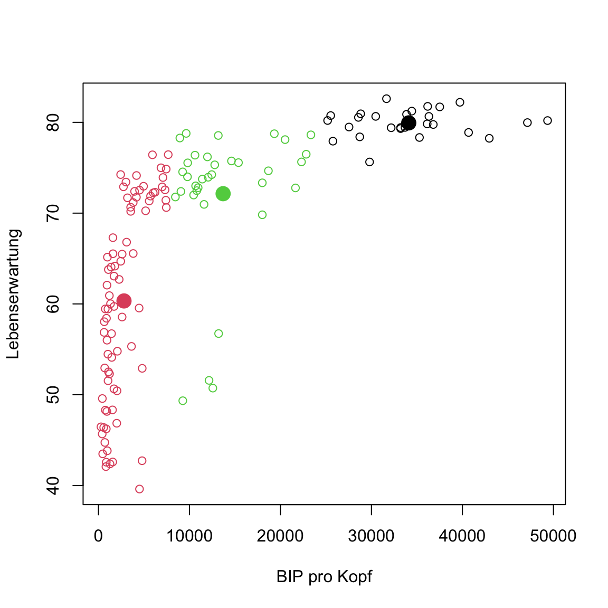
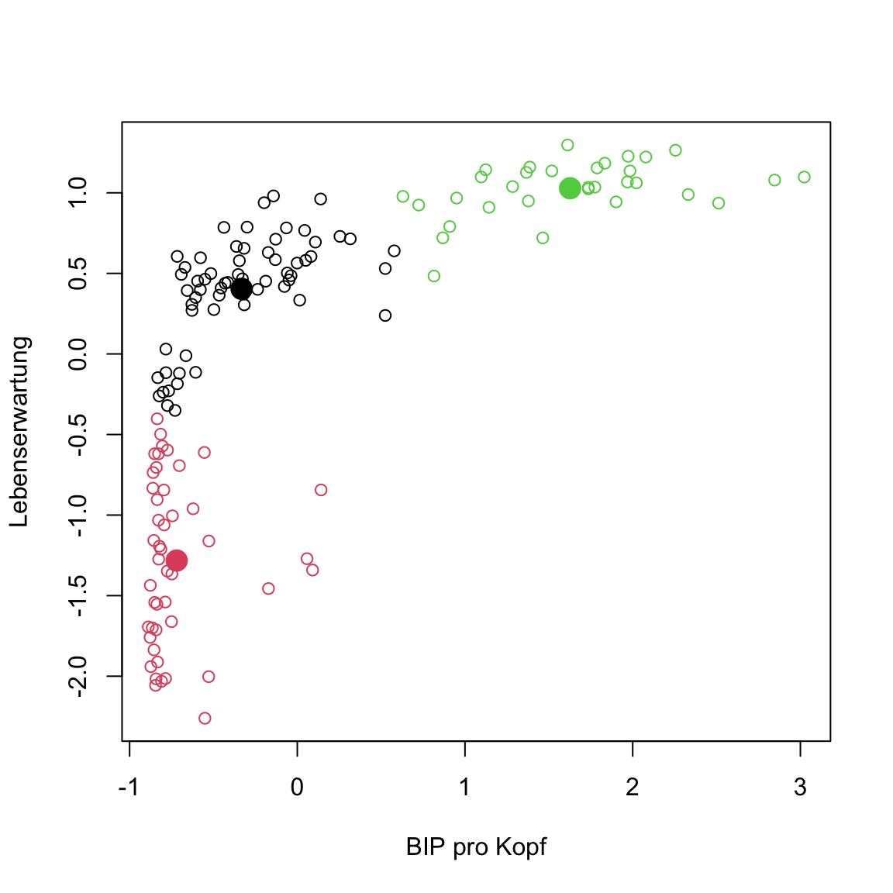

Unsupervised learning
|
Maschinelles Lernen mit R The R Bootcamp |

|

from gapminder.org
Überblick
In diesem Practical wirst die Clusteranalyse an zwei Datensätzen üben.
Am Ende des Practicals wirst du wissen wie man:
- Cluster anhand verschiedener Methoden identifiziert.
- Wie man die Anzahl der Cluster in den Daten schätzt.
Aufgaben
A - Setup
Öffne dein
TheRBootcampR project. Es sollte die Ordner1_Dataund2_Codeenthalten. Stelle sicher, dass du alle Datensätze, welche imDatensätzeTab aufgelisted sind, in deinem1_DataOrdner hast.Öffne ein neues R Skript. Schreibe deinen Namen, das Datum und “Unsupervised learning Practical” als Kommentare an den Anfang des Skripts.
## NAME
## DATUM
## Unsupervised learning PracticalSpeichere das neue Skript unter dem Namen
unspervised_learning_practical.Rim2_CodeOrdner.Lade die Pakete
tidyverse,cstab,dbscan, undmclust.
B - Lade den gap Datensatz
- Verwende die
read_csv()Funktion um den Datensatzgap.csvals Objektgapeinzulesen.
# Lese gap.csv
gap <- read_csv('1_Data/gap.csv')Printe den Datensatz.
Verwende
summary()um einen weiteren Überblick über die Daten zu bekommen.Verwende den Code unten um einen neuen Datensatz mit ausschliesslich den Daten aus dem Jahr 2007 und den beiden Variablen
LebenserwartungundBIP pro Kopfzu erstellen.
# gap in 2007
gap2007 <- gap %>%
filter(Jahr == 2007) %>%
select(`BIP pro Kopf`, Lebenserwartung)C - k-means
- Verwende die
kmeans()Funktion um dengap2007Datensatz in3Cluster aufzuteilen.
# kmeans für gap in 2007
gap2007_km <- kmeans(x = XX, centers = XX) # kmeans für gap in 2007
gap2007_km <- kmeans(x = gap2007, centers = 3) - Printe
gap2007_kmin die Console und studiere den Output.
# kmeans für gap in 2007
gap2007_kmK-means clustering with 3 clusters of sizes 27, 80, 34
Cluster means:
BIP pro Kopf Lebenserwartung
1 34099 79.9
2 2809 60.3
3 13701 72.1
Clustering vector:
[1] 2 2 2 2 3 1 1 1 2 1 2 2 2 3 3 3 2 2 2 2 1 2 2 3 2 2 2 2 2 3 2 3 3 3 1
[36] 2 2 2 2 2 3 2 2 1 1 3 2 1 2 1 2 2 2 2 2 1 3 1 2 2 3 2 1 1 1 2 1 2 2 2
[71] 3 3 2 2 3 2 2 3 2 2 3 3 2 3 2 2 2 2 2 1 1 2 2 2 1 3 2 3 2 2 2 3 3 3 2
[106] 3 2 2 3 2 3 2 1 3 1 2 3 1 2 2 2 1 1 2 1 2 2 2 3 2 3 2 1 1 3 3 2 2 2 2
[141] 2
Within cluster sum of squares by cluster:
[1] 9.86e+08 3.76e+08 6.82e+08
(between_SS / total_SS = 90.7 %)
Available components:
[1] "cluster" "centers" "totss" "withinss"
[5] "tot.withinss" "betweenss" "size" "iter"
[9] "ifault" Die erste Zeile und die Tabelle Cluster means geben Aufschluss darüber, welche Cluster das Modell identifiziert hat.
Ganz unten im Output steht eine Liste der im Objekt enthaltenen Elemente. Verwende
gap2007_km$XXum das Elementclusterals eigenes Objektclustersund das Elementcentersals eigenes Objektcenterszu speichern.
# gap2007_km
clusters <- gap2007_km$cluster
centers <- gap2007_km$centers- Verwende den Code unten um eine Abbildung mit den Daten mit Clusterzuweisungen zu erstellen. Wenn ihr damit vertraut seit, dürft ihr dafür natürlich auch
ggplot2benutzen.
# kmeans plot für gap in 2007
plot(gap2007, col = clusters)
- Mit dem Code unten ergänze nun die Zentroide der Cluster.
# kmeans plot für gap in 2007
plot(gap2007, col = clusters)
points(centers, pch = 16, col = 1:3, cex = 2)
Etwas ist seltsam oder? Einige der Punkte des mittleren Clusters scheinen eigentlich deutlich näher am unteren als am eigenen Cluster zu liegen. Das sollte nicht sein. Hast du eine Idee wie das zustande kommen konnte?
Das Problem ist, dass die Variablen sehr verschiedene Skalen haben. Die Werte von
BIP pro Kopfsind deutlich grösser und damit absolut gesehen weiter voneinander entfernt: Der Unterschied zwischen10000und20000BIP pro Kopfist deutlich grösser als der zwischen50und60JahrenLebenserwartung. Aus diesem Grund spieltBIP pro Kopfbei der Zuweisung zu den Clustern eine deutlich grössere Rolle als Lebenserwartung. Um dieses Problem zu beheben verwende den Code unten um einen neuen Datensatz mit standardisierten Featuren zu generieren.
# standardisiere gap in 2007
gap2007_stand <- gap2007 %>%
scale %>%
as_tibble()- Nun führe nochmals
kmeans()aus, diesmal mitgap2007_standund plotte die Daten mit den neuen Clusterzuweisungen. Problem behoben?
# kmeans plot für gap in 2007 (standardisiert)
gap2007_stand_km <- kmeans(x = gap2007_stand, centers = 3)
# extrahiere Elemente
clusters <- gap2007_stand_km$cluster
centers <- gap2007_stand_km$centers
# plot
plot(gap2007_stand, col = clusters)
points(centers, pch = 16, col = 1:3, cex = 2)
D - k-selection
- Nun verwende den Code unten um einen Verlauf der Binnenvarianz für
kmeanszu erstellen für potentielle Clusteranzahlen2:20. Der Code verwendet diemap()Funktion des Paketspurrr. Das Paket wird dabei mitpurrr::explizit angesprochen, weil es ansonsten ggf. zu Verwechslungen mit dermapFunktion desmclustPakets käme. Benutze die standardisierten Datengap2007_stand.
# binnenvarianz über kmeans verlauf
km_verlauf <- purrr::map(2:20, kmeans, x = gap2007_stand)
binnenvarianz <- purrr::map_dbl(km_verlauf,
`[[`, i = 'tot.withinss')- Benutze
plot(XX)um den Verlauf derbinnenvarianzzu plotten.
# kmeans plot für gap in 2007 (standardisiert)
plot(binnenvarianz)Was sagt euch der Plot? Gibt es Ellbogen im Verlauf, die bestimmte Werte für k nahelegen?
Auf Basis des Verlaufs erscheinen verschiedene Werte für k plausibel: 1, 3, oder 7. Verwende die
cDistance()Funktion aus demcstabPaket im Code unten um Schätzungen für k innerhalb der Werte2:20auf Basis der Gap- und Slope-Statistik zu erhalten.
# schätze k mit cstab
k_est <- cDistance(data = as.matrix(XX),
kseq = XX:XX)# schätze k mit cstab
k_est <- cDistance(data = as.matrix(gap2007_stand),
kseq = 2:20)- Lass dir mit
k_est$k_Gapundk_est$k_Slopeausgeben. Sinnvolle Schätzungen?
# schätze k mit cstab
k_est$k_Gap[1] 14k_est$k_Slope[1] 3- Versuche nun das selbe mit
cStability(). Lass dir im Anschluss den Wertk_instabausgeben. Sinnvoller?
# schätze k mit cstab
k_est <- cStability(data = as.matrix(gap2007_stand),
kseq = 2:20)
========
===============
======================
==============================
======================================
=============================================
====================================================
============================================================
====================================================================
===========================================================================k_est$k_instab[1] 3Notiz: Erinnere dich, es gibt kein richtiges k. Aus diesem Grund ist in Fällen, in denen die Clusterlösung visuell inspiziert werden kann, das Augenmass der etablierte Goldstandard. Bei mehr als zwei Features wird dies natürlich zunehmend schwieriger, sodass einem nichts anderes übrig bleibt als sich auf komputationale Verfahren zu stützen.
E - DBSCAN
- Verwende
dbscan()aus demdbscanPaket um die Daten erneut zu clustern. Hier ist es erneut essentiell, die standardisierten Datengap2007_standzu verwenden, da ansonsten derepsParameter effektiv keinen Kreis, sondern eine sehr, sehr flache Ellipse beschreibt. Nur wenn alle Features die selbe Skala haben, bedeutetepseine Distanz der gleichen Grösse für alle Feature. Setzeepsauf.5.
# clustere mit DBSCAN
gap2007_stand_dbscan <- dbscan(x = XX,
eps = XX)# clustere mit DBSCAN
gap2007_stand_dbscan <- dbscan(x = gap2007_stand,
eps = .5)Printe das Objekt
gap2007_stand_dbscanum es zu inspizieren.Was verrät euch der Output? Erinnert euch ein Cluster von 0 bedeutet Outlier.
Ein einzelner Cluster und 5 Outlier wurden identifiziert. Schaut euch das Ergenis an indem ihr wie oben das Element
clusterextrahiert und dann die Daten mit eingefärbten Clustern plottet. Das+ 1ist notwendig, weil ein Wert von0keine Farbe bedeutet.
# extrahiere Elemente
clusters <- gap2007_stand_dbscan$XX
# plot
plot(XX, col = XX + 1)# extrahiere Elemente
clusters <- gap2007_stand_dbscan$cluster
# plot
plot(gap2007_stand, col = clusters + 1)
- Lasse
dbscan()erneut laufen, aber mit anderen Werten füreps. Versucheeps = .3undeps = .1und plotte jeweils das Ergebnis. Ändert sich was?
# clustere mit DBSCAN
gap2007_stand_dbscan.3 <- dbscan(x = gap2007_stand, eps = .3)
gap2007_stand_dbscan.1 <- dbscan(x = gap2007_stand, eps = .1)
# plot
par(mfrow = c(1, 3))
plot(gap2007_stand, col = gap2007_stand_dbscan$cluster + 1)
plot(gap2007_stand, col = gap2007_stand_dbscan.3$cluster + 1)
plot(gap2007_stand, col = gap2007_stand_dbscan.1$cluster + 1)
dbscanhat einen weiteren ParameterminPts, welcher bestimmt, wie viele Punkte in einem Abstand vonepsliegen müssen, damit der Punkt ein Kernpunkt wird. Versuche ein paar verschiedene Werte und versuche zu verstehen was passiert.
F - Gaussian Mixtures
- Zum Abschluss, verwende
Mclust()aus demmclustPaket um über Gaussian Mixture Modelle die Cluster zu bestimmen. Arbeite hier mit dem nicht-standardisierten Datensatzgap2007. Dies ist möglich, weil Gaussian Mixtures die Skalen der Variablen automatisch berücksichtigt.
# clustere mit Gaussian mixtures
gap2007_gm <- Mclust(XX)# clustere mit Gaussian mixtures
gap2007_gm <- Mclust(gap2007)Printe das Objekt
gap2007_gmum es zu inspizieren.Der Output verrät relativ wenig, nur welche Elemente enthalten sind. Verwende
table(gap2007_gm$classification)um einen Überblick über die Clusterzuweisungen zu erhalten. Wie viele Cluster wurden identifiziert?Verwende das
classificationElement um wie üblich die Daten mit den Clusterzuweisungen zu plotten.
# plot
plot(gap2007_stand, col = gap2007_gm$classification)
- Führe nun alternativ
plot(gap2007_gm, what = 'classification')aus, um den eigenen Plot desmclustPakets zu sehen.
# plot
plot(gap2007_gm, what = 'classification')
Versuche nachzuvollziehen was der
mclustPlot euch zeigt. Erinnere dich, die Ellipsen sind Normalverteilungen, die jeweils eigene Skalen und Feature-Zusammenhänge berücksichtigen können.Eine interessante Eigenschaft von Gaussian Mixtures ist, dass man direkt die Unsicherheit der Clusterzuweisung evaluieren kann. Führe
plot(gap2007_gm, what = 'uncertainty')aus. Die Grössen der Punkte zeigen an, wie gross die Unsicherheit (oder Rivalität) in der Zuweisung der Punkte zu den Clustern war.
# plot
plot(gap2007_gm, what = 'uncertainty')X - Challenges: Modellselektion Gaussian mixtures
- Eine nützliche Eigenschaft der
Mclust()Funktion ist, dass parallel verschieden komplexe Varianten des Modells mit verschiedenem k geschätzt werden und dass am Ende nicht nur das beste k ausgewählt wird, sondern die beste Kombination von k und Modell. Du erhälst einen Überblick über den Prozess mitplot(gap2007_gm, what = 'BIC').
# plot
plot(gap2007_gm, what = 'BIC')
BIC ist das sogenannte Bayesian Information Criterion und dient der Auswahl eines Modells unter Berücksichtigung der Komplexität des Modells. In diesem Fall sind hohe Werte besser. In der Abbildung siehst du nun wie sich der BIC Wert über verschiedene k (Number of components) und Modelle (verschiedene Linien) entwickelt.
- Verwende
plot(gap2007_gm, what = 'BIC', ylim = c(-4200, -3900))um einen besseren Ausschnitt zu erhalten. Nun solltest du sehen können, dass dasEVVModell den besten BIC für 4 Komponenten erzielt. Entsprechend wurde dieses Modell ausgewählt.
# plot
plot(gap2007_gm, what = 'BIC', ylim = c(-4200, -3900))
- Lasse dir mit
?mclustModelNamesdie Erläuterung zu den Modellbezeichnungen anzeigen. Dort findest zu heraus, dass das Modell annimmt, dass das Volumen der einzelnen Cluster (hier die Fläche der Ellipsoide) gleich ist. Dies lässt sich auch inplot(gap2007_gm, what = 'classification')erkennen.
plot(gap2007_gm, what = 'classification')
- Verwende nun den Code unten um explizit nur bestimmte Gaussian Mixture Modelle zu verwenden. Verwende hierzu
modelNames = 'XX'wobei ‘XX’ das Kürzel des jeweiligen Modells ist. Plotte im Anschluss die gefunden Lösungen. Probiere zunächstEEIaus. Danach spiele ein wenig herum.
# Wähle Gaussian Mixture Modell explizit aus
gap2007_gm <- Mclust(gap2007, modelNames = 'XX')
plot(gap2007_gm, what = 'classification')# Wähle Gaussian Mixture Modell explizit aus
gap2007_gm <- Mclust(gap2007, modelNames = 'EEI')
plot(gap2007_gm, what = 'classification')Y - Challenges: Neuer Datensatz
- Verwende die
read_csv()Funktion um den Datensatzcredit.csvals Objektcrediteinzulesen.
# Lese credit.csv
credit <- read_csv('1_Data/credit.csv')Printe den Datensatz und verwende
summary()um einen weiteren Überblick über die Daten zu bekommen.Verwende die bis hierin geübten Methoden um zu identifizieren, ob und wie viele Cluster sich im
creditDatensatz befindet. Bzw. ob und wie sich Kreditkarten Kunden in Gruppen zusammenfassen lassen. Viel Spass!
Beispiele
library(tidyverse)
library(cstab)
library(dbscan)
library(mclust, mask.ok = F)
# Beispieldatensatz
data(mpg)
# Verarbeitung des Datensatzes
mpg <- mpg %>% select_if(is.numeric)
mpg_stand <- mpg %>%
scale %>% # Standardisieren
as_tibble()
# k-means -----
# Finde Cluster
mpg_km <- kmeans(mpg_stand,
centers = 3)
# Zeige Zentroide
mpg_km$centers
# k-selection -----
# Zeige Binnenvarianz Verlauf
km_verlauf <- purrr::map(2:20, kmeans, x = mpg_stand)
binnenvarianz <- purrr::map_dbl(km_verlauf,
`[[`, i = 'tot.withinss')
# Plotte die Binnenvarianz
plot(binnenvarianz)
# Gap & Slope Statistik
k_est <- cDistance(as.matrix(mpg_stand),
kseq = 2:20)
k_est$k__Gap
k_est$k_Slope
# Cluster stability
k_est <- cStability(as.matrix(mpg_stand),
kseq = 2:20)
k_est$k_instab
# DBSCAN -----
# Finde Cluster
mpg_dbscan <- dbscan(mpg_stand, eps = 1)
# Zeige Zentroide
mpg %>%
mutate(cl = mpg_dbscan$cluster) %>%
group_by(cl) %>%
summarize_all(mean)
# Gaussian Mixtures -----
# Finde Cluster
mpg_gm <- Mclust(mpg)
# Zeige Zentroide
mpg %>%
mutate(cl = mpg_gm$classification) %>%
group_by(cl) %>%
summarize_all(mean)
# Plotte Cluster
plot(mpg_gm, what = 'classification')
# Vergleiche Cluster -----
table(mpg_km$cluster, mpg_dbscan$cluster)
table(mpg_km$cluster, mpg_gm$classification)
table(mpg_dbscan$cluster, mpg_gm$classification)Datensätze
| Datei | Zeilen | Spalten |
|---|---|---|
| gap.csv | 1692 | 6 |
| credit.csv | 8636 | 8 |
gap.csv
Der gap Datensatz basiert auf dem Gapminder Projekt und stammt aus dem R Paket gapminder.
| Variable | Beschreibung |
|---|---|
| Land | Name des Landes |
| Kontinent | Name des Kontinents |
| Jahr | Jahr |
| Lebenserwartung | in Jahren |
| Population | Anzahl Einwohner des Landes |
| BIP pro Kopf | Bruttoinlandsprodukt pro Einwohner |
credit.csv
Der credit Datensatz ist ein Ausschnitt des Öffentlich verfügbaren Credit Card Dataset. Der Datensatz beinhaltet 8 Features, die einen Auschnitt des Verhaltens von 8636 Kreditkartenkunden beschreiben.
| Variable | Beschreibung |
|---|---|
| BALANCE | Verfügbares Guthaben |
| BALANCE_FREQUENCY | Änderungsfrequenz des Guthabens (1 = häufig, 0 = selten) |
| PURCHASES | Summe der Einkäufe |
| CREDITLIMIT | Kreditlimit der Karte |
| ONEOFFPURCHASES | Betrag der grössten einmaligen Zahlung |
| MINIMUM_PAYMENTS | Minimale Konto-Ausgleichszahlung |
| PRCFULLPAYMENT | Prozent vollständige Konto-Ausgleichszahlung |
| TENURE | Dauer des Kundenverhältnisses |
Funktionen
Paket
| Paket | Installation |
|---|---|
tidyverse |
install.packages("tidyverse") |
cstab |
install.packages("cstab") |
dbscan |
install.packages("dbscan") |
mclust |
install.packages("mclust") |
Funktionen
Clustering
| Funktion | Paket | Beschreibung |
|---|---|---|
kmeans() |
stats |
Clustere die Daten mit k-means |
dbscan() |
dbscan |
Clustere die Daten mit DBSCAN |
Mclust() |
mclust |
Clustere die Daten mit Gaussian Mixtures |
k-selection
| Funktion | Paket | Beschreibung |
|---|---|---|
cDistance() |
cstab |
Identifiziere k mit distanzbasierten Methoden, z.B., der Gap Statistik. |
cStability() |
cstab |
Identifiziere k mit stabilitätsbasierten Methoden. |
Materialien
Dokumentation
- Eine gutes Tutorial über k-means und hierarchisches Clustering.